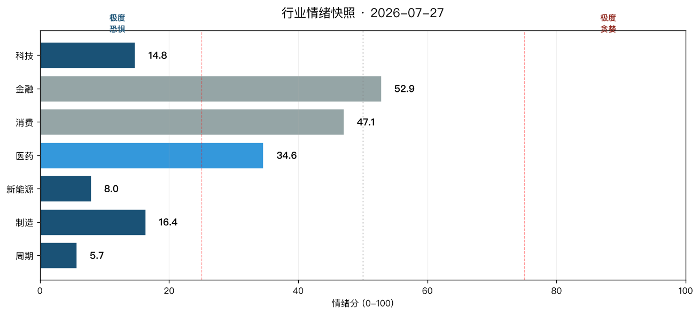
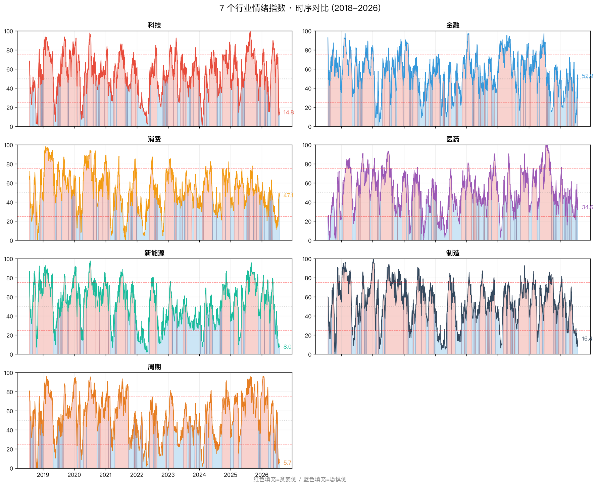
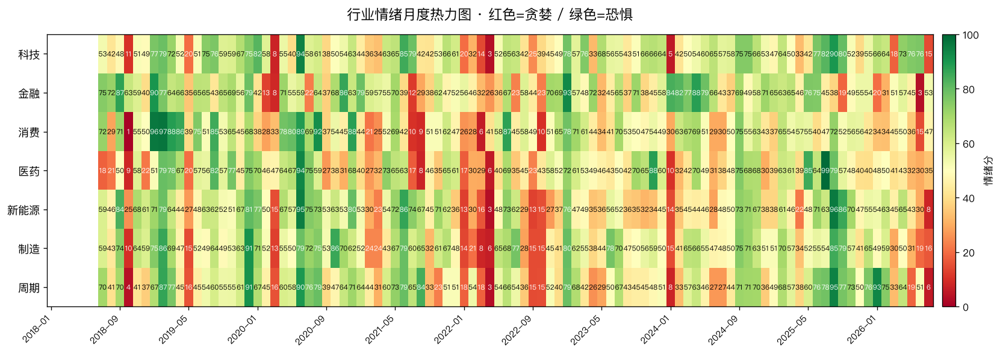
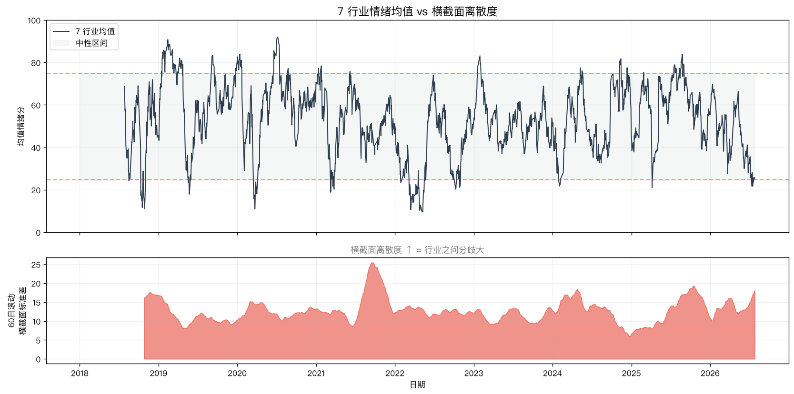

行业版 A 股情绪指数：4 个极度恐惧，2 个中性，1 个恐惧

大盘情绪 24.4（极度恐惧）只告诉你一半真相。真正的故事是结构性分化：科技 / 新能源 / 制造 / 周期 全部极度恐惧；金融 / 消费 还撑在中性。7 行业均值 25.6，标准差 19.1。分歧巨大。
起因
上周发了 《A 股情绪指数：当市场恐慌到 24.4 分，我做了件事》，有读者问我：能不能看到底是哪些板块在恐慌？
这是一个好问题。大盘情绪 24.4 是加权结果——金融消费权重高，成长板块（科技 / 新能源）已经极度恐惧，但大盘指数因为防御板块的稳定而显得没那么惨。
结构性分化才是 A 股的核心现实：单看大盘 24.4 是"要不要抄底"，拆开看是"在哪些板块抄底"。

为什么做行业版
大盘情绪指数是"沪深 300 加权"，但 A 股真正的轮动发生在板块层面：
- 2019-Q1：消费白酒 + 半导体新能源起飞，地产银行趴着
- 2021-Q1：所有板块齐涨，但成长板块比价值板块跑赢 30 个百分点
- 2022-Q2：上海封城所有板块齐跌，但医药和消费抗跌
- 2024-2025：金融消费防御性凸显，成长板块已经掉头
- 2026-Q3：今天看到的格局——成长周期深陷恐惧，防御板块撑住
如果只盯大盘情绪，你会错过所有这些轮动。
7 个行业 + 对应指数
我选了申万一级 7 个代表行业，分别跑同一套情绪指数：
| 行业 | 申万代码 | 指数名称 |
|---|---|---|
| 科技 | 801080 | 电子 |
| 金融 | 801780 | 银行 |
| 消费 | 801120 | 食品饮料 |
| 医药 | 801150 | 医药生物 |
| 新能源 | 801730 | 电力设备 |
| 制造 | 801880 | 汽车 |
| 周期 | 801030 | 基础化工 |
数据源：akshare.index_hist_sw，每个行业 3000-6400 行日度历史。
5 个精简成分
行业版是 v1 简化版，只用 5 个成分（去掉了资金面和宽度）：
| 成分 | 公式 | 权重 | 方向 |
|---|---|---|---|
mom_20 | 20 日 pct_change | 25% | + |
ma_dev_60 | 收盘 / 60 日均线 - 1 | 15% | + |
rv_20 | 20 日已实现波动率 × √252 × 100 | 25% | - |
channel_20 | (close - 20low) / (20high - 20low) | 10% | + |
mom_60 | 60 日 pct_change | 25% | + |
为什么去掉资金面：融资余额无法按行业切分（AKShare 没有这个接口）。北向资金按行业有数据但工作量更大，v2 再补。
为什么去掉宽度：个股新高新低按行业切片需要每日拉全 A 股 5000+ 只股票再 group，工作量大。v2 用东方财富行业成分股接口可以做到。
为什么用 60 日而不是 250 日均线：A 股行业轮动快（成长板块几周就能完成一次风格切换），长周期均线反应迟钝。
当前读数
| 行业 | 当前 | 20日均 | 60日均 | 状态 |
|---|---|---|---|---|
| 科技 | 14.8 | 44.2 | 64.0 | 🔴 极度恐惧 |
| 金融 | 52.9 | 24.7 | 37.8 | ⚪ 中性 |
| 消费 | 47.1 | 30.8 | 29.3 | ⚪ 中性 |
| 医药 | 34.6 | 42.6 | 37.5 | 🟠 恐惧 |
| 新能源 | 8.0 | 14.0 | 35.6 | 🔴 极度恐惧 |
| 制造 | 16.4 | 15.7 | 31.1 | 🔴 极度恐惧 |
| 周期 | 5.7 | 21.6 | 36.7 | 🔴 极度恐惧 |
横截面：7 行业均值 25.6，标准差 19.1。分歧巨大。
20 日均 vs 60 日均：金融消费快速下行（当前 52.9/47.1，但 20 日均只有 24.7/30.8），说明防御板块过去 20 天才刚开始跌；新能源制造已经在底部徘徊（20 日均 14/16，已经接近 0）。
8 年情绪周期

月度热力图

横截面分歧
行业版最值钱的地方不是单个行业的读数，而是横截面分歧——什么时候行业之间分化大、什么时候齐涨齐跌。

分歧大 = 轮动机会多：当你看到某些板块极度恐惧而某些板块还在中性，资金轮动往往已经开始。
分歧小 = 齐涨齐跌：往往是大趋势转折点。比如 2018-Q4 所有板块齐涨的顶点，紧接着就是齐跌。
怎么用
按行业操作建议：
| 情绪区间 | 行业 | 操作建议 |
|---|---|---|
| 极度恐惧（<25） | 新能源（8.0）、周期（5.7）、科技（14.8）、制造（16.4） | 分批建仓 / 加仓 |
| 恐惧（25-45） | 医药（34.6） | 持有 / 等待催化 |
| 中性（45-55） | 消费（47.1）、金融（52.9） | 持有 / 不轻易加仓 |
| 贪婪（55-75） | — | 分批减仓 |
| 极度贪婪（>75） | — | 减仓 / 锁定收益 |
具体思路：
- 新能源（8.0）：30 日新低，看 1-2 月能否反弹
- 周期（5.7）：5 年新低，需要基本面验证（地产链、产能去化）
- 科技（14.8）：电子板块，看 AI 链（光模块、PCB）能否率先反弹
- 制造（16.4）：汽车链基本面分化（整车 vs 零部件 vs 智能驾驶），需要选股
- 医药（34.6）：政策博弈，等待集采落地
- 金融 + 消费：防御板块结构性抗跌，但 20 日均已经下行，可能补跌
完整的代码
- 项目目录：
~/.hermes/projects/finance-refresh/a-stock-sentiment-industry/ - 数据：
data/raw_industry.parquet+data/index_industry.parquet - 脚本：
fetch_industry.py → compute_industry.py → plot_industry.py
如果你想自己跑，所有代码都在上面那个目录。akshare 装上就能用。
v2 计划
- 加行业资金面：北向资金按行业切分（AKShare 有
stock_hsgt_holding_statistics_em） - 加行业宽度：每日按行业切片统计 60 日新高新低股数
- 横向相关性矩阵：哪些行业情绪同步、哪些背离
- 行业轮动策略：用行业情绪 + 行业动量，做 ETF 轮动
三个 Takeaway
- 大盘情绪 24.4 太粗。结构性分化才是 A 股核心现实——金融消费撑住大盘，成长周期已经极度恐惧。
- 7 行业标准差 19.1是行业版最值钱的地方。大盘指数看不到这种分化——当分歧扩大时，轮动机会已经在路上。
- 操作上要按行业来，不能一刀切。新能源 8.0 和金融 52.9 是完全不同的信号。